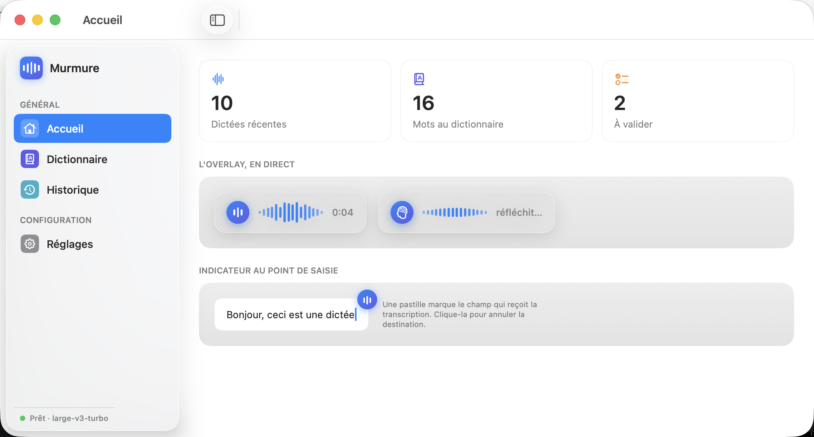
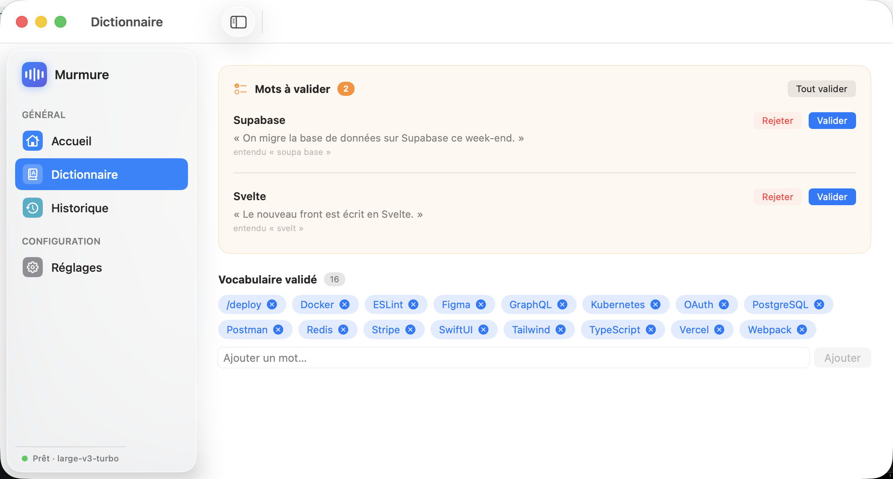

Local voice dictation for macOS. Press a key, speak, and get clean text right where your cursor is — 100% on your Mac.


Transcription (whisper.cpp) and AI cleanup run entirely on your Mac. Nothing is uploaded, ever.
Your words appear live above a Spotlight-style spectrum as you talk, then a brain shows the AI cleanup.
A local LLM removes filler words, stutters and repetitions, and fixes punctuation — keeping your words.
Correct a transcript and Murmure proposes the word — it joins your dictionary only after you validate it.
Re-bind every shortcut, with conflict warnings. Pastes at the cursor in any app, web included.
Fire off several dictations at once — they stack up and are delivered in order, so your text never gets scrambled.
/bin/bash -c "$(curl -fsSL https://raw.githubusercontent.com/Hugo291/Murmure/main/install.sh)"One command. It installs the dependencies, the speech model, builds and signs the app, and launches it. macOS 14 (Sonoma) or later.